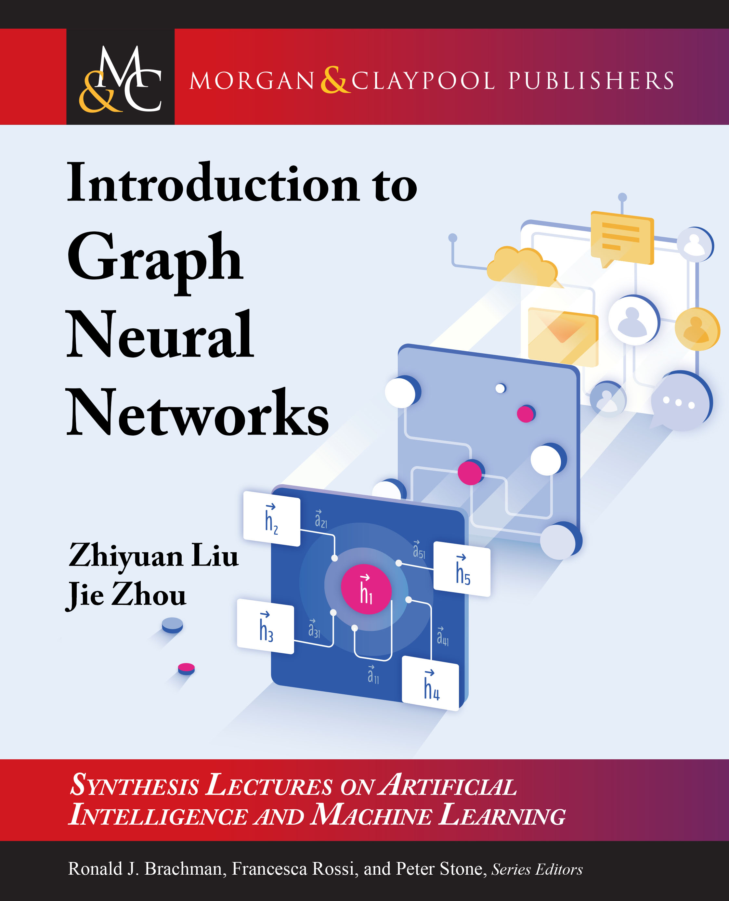

|  |
Introduction to Graph Neural Networks
Synthesis Lectures on Artificial Intelligence and Machine Learning, Morgan and Claypool Publishers, March 2020. 127 pages.
Links: [Publisher]
Welcome comments and suggestions: liuzy@tsinghua.edu.cn
|
Abstract
Graphs are useful data structures in complex real-life applications such as modeling physical systems, learning molecular fingerprints, controlling traffic networks, and recommending friends in social networks. However, these tasks require dealing with non-Euclidean graph data that contains rich relational information between elements and cannot be well handled by traditional deep learning models (e.g., convolutional neural networks (CNNs) or recurrent neural networks (RNNs)). Nodes in graphs usually contain useful feature information that cannot be well addressed in most unsupervised representation learning methods (e.g., network embedding methods). Graph neural networks (GNNs) are proposed to combine the feature information and the graph structure to learn better representations on graphs via feature propagation and aggregation. Due to its convincing performance and high interpretability, GNN has recently become a widely applied graph analysis tool.
This book provides a comprehensive introduction to the basic concepts, models, and applications of graph neural networks. It starts with the introduction of the vanilla GNN model. Then several variants of the vanilla model are introduced such as graph convolutional networks, graph recurrent networks, graph attention networks, graph residual networks, and several general frameworks. Variants for different graph types and advanced training methods are also included. As for the applications of GNNs, the book categorizes them into structural, non-structural, and other scenarios, and then it introduces several typical models on solving these tasks. Finally, the closing chapters provide GNN open resources and the outlook of several future directions.
Authors
- Zhiyuan Liu is an associate professor in the Department of Computer Science and Technology, Tsinghua University. He got his B.E. in 2006 and his Ph.D. in 2011 from the Department of Computer Science and Technology, Tsinghua University. His research interests are natural language processing and social computation. He has published over 60 papers in international journals and conferences, including IJCAI, AAAI, ACL, and EMNLP.
- Jie Zhou is a second-year Master’s student of the Department of Computer Science and Technology, Tsinghua University. He got his B.E. from Tsinghua University in 2016. His research interests include graph neural networks and natural language processing.
Table of Contents
- Preface
- Acknowledgments
- Chapter 1: Introduction
- Chapter 2: Basics of Math and Graph
- Chapter 3: Basics of Neural Networks
- Chapter 4: Vanilla Graph Neural Networks
- Chapter 5: Graph Convolutional Networks
- Chapter 6: Graph Recurrent Networks
- Chapter 7: Graph Attention Networks
- Chapter 8: Graph Residual Networks
- Chapter 9: Variants for Different Graph Types
- Chapter 10: Variants for Advanced Training Methods
- Chapter 11: General Frameworks
- Chapter 12: Applications -- Structural Scenarios
- Chapter 13: Applications -- Non-Structural Scenarios
- Chapter 14: Applications -- Other Scenarios
- Chapter 15: Open Resources
- Chapter 16: Conclusion
- Bibliography
- Authors' Biographies
Last update: 27 Mar, 2019.